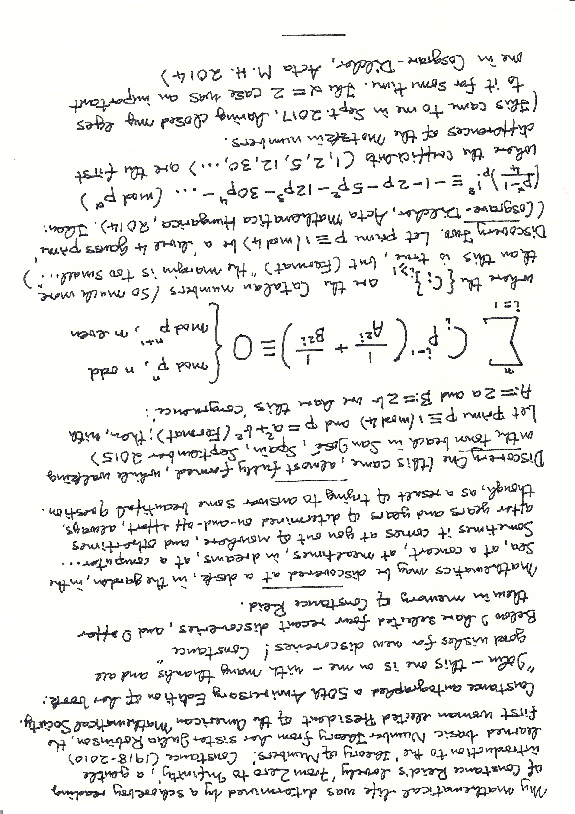
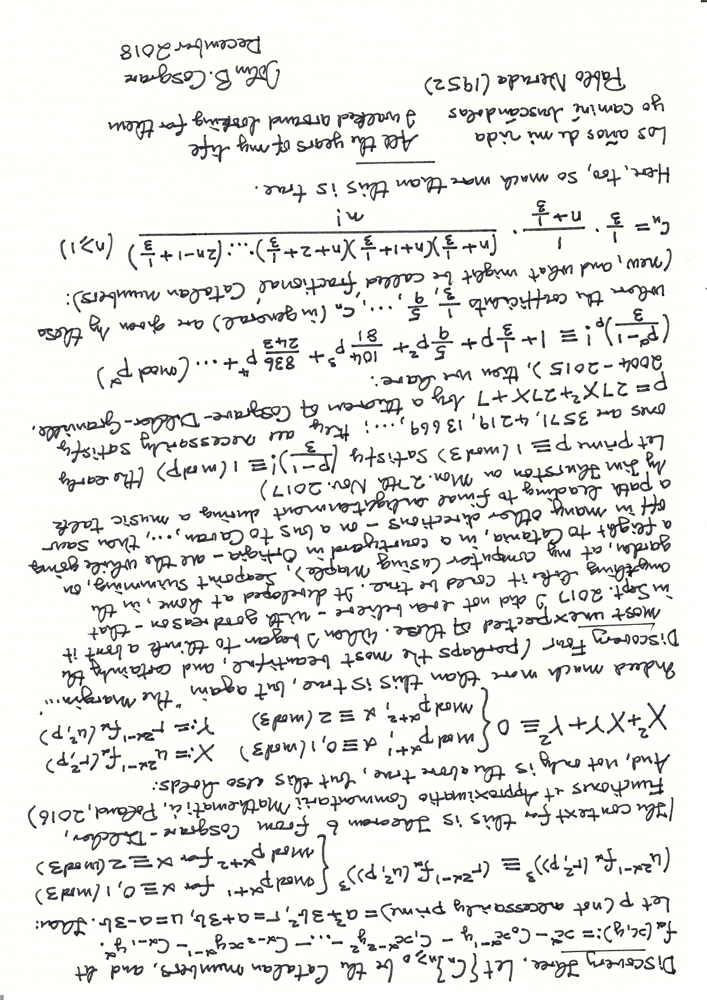
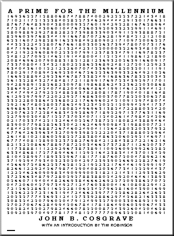
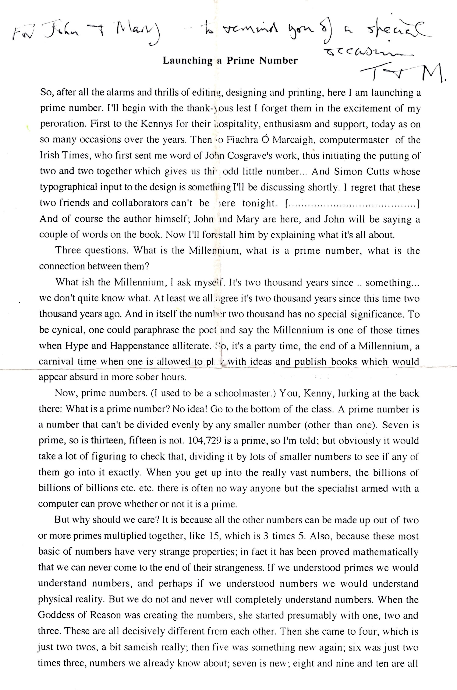
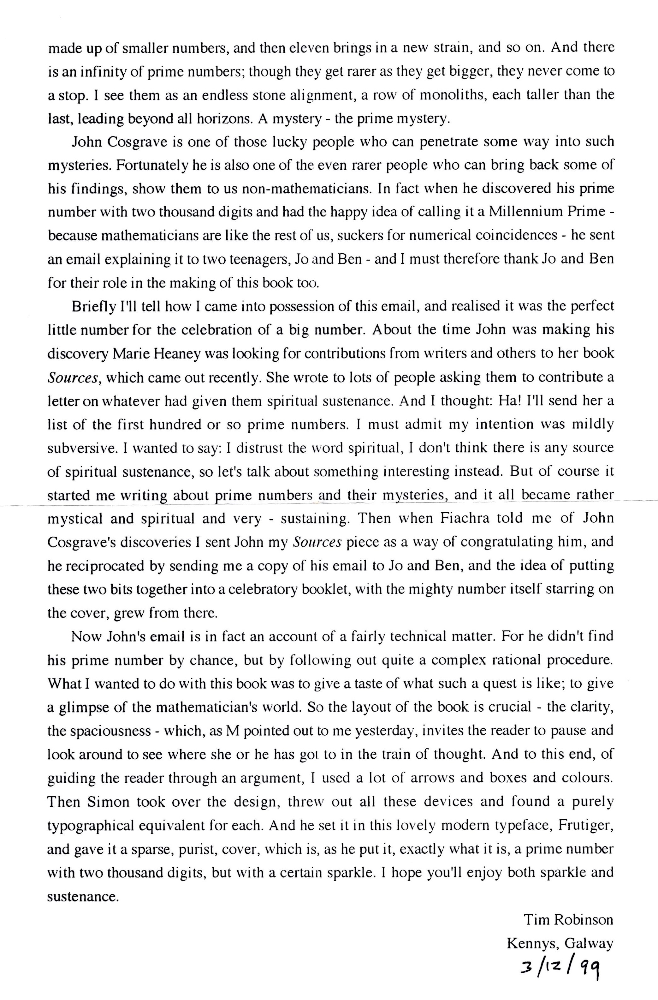
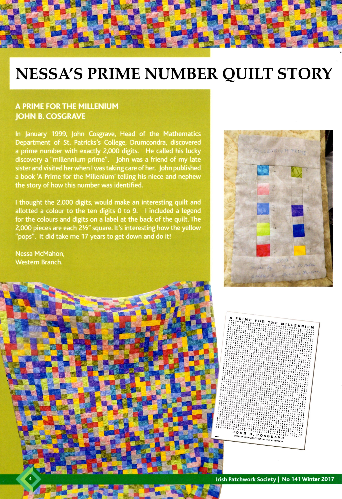

Welcome to my Home Page (which I update from time to time)

In one corner of my this old website (Fermat6)
is an unpublished paper of mine, 'Could there exist a sixth Fermat prime? I believe it is not impossible.'
At the top of that paper I wrote:
For my wife, Mary, and in memory of my parents Annie Sands (1900-1967) and Seán Cosgrave (1906-1995)
and now, as I make my final additions (at the time of original writing, August 2007) to my site, I repeat that same dedication.
At the time that I wrote the above 'final additions' I wrongly thought that this page (and all the others too) had indeed reached its final form (leaving St. Patrick's College I believed I would never again be able to edit my website...). But, through the later help of a son-in-law (Fiachra Lennon), and - more recently - a brilliant young DCU student (and near neighbour) Alex Killalea (who now hosts my site), I am able to update material. Thank you Fiachra and Alex; I could not have done it without your help.
Here is a photograph
with my parents in it (from the left: Mum, Mrs Murray, Anne McDonagh, Dad, and Ciarán Maguire
(an uncle of the renowned Irish chef Neven Maguire) at their school in Bailieboro, taken in
the early 1960s; and here is one of
my mother's garden
- a beautiful place - at the back of our home in Henry Street, Bailieboro. Dad did some gardening - always in a suit - but it was
Mum's garden.
I used to love climbing those trees at the bottom of the garden. Once, when I was perhaps ten years old, with a nearby tree (which I later tried
to paint, in London, when I was a student there), I turned my back on it, and wondered if it was still there... I tried turning quickly to see if
I would find that it had gone away... Many years later I read somewhere - in Bertrand Russell? - that others had done that over the years. And here is
that tree, in a photograph I took recently.
There are many more photographs of my family (going back to parents and grandparents, and I include some of Mary's parents and grandparents) and friends in the
Autobiography corner of my website.
A note of late March 2023. Of late the most actively edited part of my website has been the photos section - itself originally (and will continue to be so) a part of my Autobiography corner, because of that, I have added an extra lower column at the foot of my Site table, solely to link directly to my ever-expanding collection of photographs of family and friends:
Site table
A truly remarkable internet discovery for me was finding the Internet Archive (also known as The Wayback Machine). Visit there to see how it works.
Here's how I've used it: my first website had this address: www.spd.dcu.ie/johnbcos, but that was later changed to staff.spd.dcu.ie/johnbcos. The latter ceased to exist sometime in July 2016. But - and this is the wonder of the Internet Archive - I can now see saved versions of all my early web pages by going to the Internet Archive site, enter either of the above addresses, and see ... . Try it!!
By way of example, I find at the Internet Archive site that the first recorded image of my original website is
here, at the foot of which page is stated " This page was last updated 16 February 2001 12:53:01 -0000 ", and the final recorded image (dated at 20 July 2016) is
here.
The wonders of the internet ...
A fiftieth anniversary edition of Constance Reid's FROM ZERO TO INFINITY was published in January 2006 (there is a delightful Notices of the American Mathematical Society review by
Bruce Reznick
here).
I was absolutely delighted that Constance Reid quoted from a September 1999 email of mine in her two new pages 'What mathematicians and
teachers write about FROM ZERO TO INFINITY.' That 1999 initial contact with Constance Reid resulted from an
August 1999 email
that I sent to the Number Theory Mailing List. To see what Constance quoted you will have to buy her wonderful book, the book that determined
the course of my mathematical life. I shall always treasure the
signed copy
of the 50th anniversary edition which Constance sent to me.
(Here is the cover of
my 1959 copy.)
In 2017 I was invited by photographer Patrick Bolger (on the recommendation of
Tim Robinson) to be photographed for a future collection of his, and to contribute - for inclusion in the collection - some work of mine in my handwriting. I saw it as an opportunity to repay a personal debt to Constance Reid.
My contribution (because Constance had used the term discoveries I decided to also use Discovery One, Two, ..., but, for mathematicians reading this, they should replace Discovery with Theorem):


My author royalties from the sale of
Folding Landscapes'
A Prime For The Millennium booklet (an explanatory email to my niece Jo and nephew Ben) go to the Irish Cancer Society. See the
Millennium prime booklet
section of my site for further details.

A painting by Leeds based artist Tom Marine of the 2000-digit prime was purchased by Turlough Sheehan (Director of Consolidated Distributions Services Ltd.), knowing that Tom would divide the entire amount between the NSPCC (UK) and the Irish Cancer Society. I gave the background to that sale in An Irishman's Diary column (written by me), published by the
Irish Times
on Tuesday 22nd February 2000. The unedited version of my column article (which contains a reference to D.H. Lehmer, which was
omitted in the Irish Times edited version) may be viewed in the
Irishman's Diary section of my site.
A review ("I loved this book. It is unique and wonderful") by Jerry Verrier which appeared in the Galway Advertiser on Thursday 17th
February 2000 may be viewed
here.
A brief review ("The booklet is charming, the story well told") by Fernando Q. Gouvêa in the Mathematical Association of America website may be accessed
here.
Please tell your family, friends, neighbours (in the USA your neighbors), colleagues, ... about this booklet. Buy a copy for yourself, your family,
your friends, your neighbours, ... . If you want a signed copy, at no extra charge!, just ask ... , but you will have to be here in Dublin.
Our own signed copy from Tim and Máiréad.
A photograph taken by my wife, Mary, at the
Kenny's Bookshop
launch on Friday 3rd December 1999 of A Prime For The Millennium;
left to right are unknown, myself, Tim Robinson, and Tom Kenny's left elbow.

There is another photograph from the Kennys launch in the
Photographs section of my site.
A note of Thursday 25th February 2021. Today, rooting through an old box of this-and-that I came upon a lovely find: the two page note that Tim had made for his introduction at Kenny's Bookshop at our launch, and here they are:


A note of Monday 23rd January 2023. I dedicated this little booklet to two friends (Proinsias Ní Dhorchaí and Maura Ward, who died within three days of each other, on the 16th and 19th of July 1994) whom I had known from my time in Carysfort College. When I received early copies from Tim Robinson in December 1999 I gave a signed copy to another dear friend - Aideen McMahon - with whom I had also worked in Carysfort, and then, following its closure, in St. Patrick's College, Drumcondra).
From my diary of of 8th Dec. 1999: "Phoned Aideen and was with her for about three hours", and on 24th Dec. "I cycled out to Aideen to give her a pot of my millennium jam: loganberry, raspberry, gooseberry and rhubarb".
Aideen died on the 24th of the following month, January 2000. Had Aideen died before my booklet went to print I would have included her in my dedication. Later her sister Nessa came upon the signed copy I had given to Aideen, and years later Nessa created this beautiful prime number quilt (which she most generously gave to me as a gift), and wrote an article about it in the Winter 2017 issue of the Journal of the Irish Patchwork Society:


{kind=link}
{kind=link}
{kind=link}
{kind=link}
{kind=link}
{kind=link}